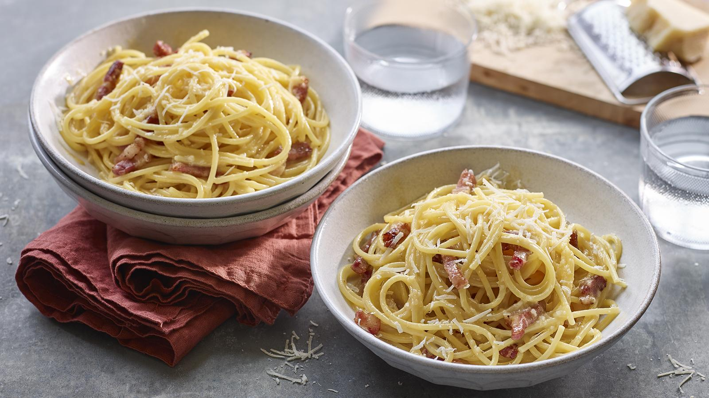

Carbonara Recipe

This traditional way to make carbonara uses sausage instead of bacon or guanchale
This recipe is fool-proof and only take 10 mins to whip together, perfect for a weeknight
Ingredients
- 150g tagliatelle
- 3 sausage(cumberland)
- 15g fresh flat-leaf parsley(dont use dried)
- 1 large egg
- 30g parmesan cheese
Steps
- Wet your hands and take the meat out of the sausage casing to form meatballs and pan-fry on medium heat(usually mark 2-4)
- Cook you pasta according to packet(you dont know better)
- Finely chop the parsley and beat with the egg and parmesan
- Add the pasta to the sausage pan with abit of the pasta water
- Add the egg mixture to the pan and stir untill it forms a creamy sauce(if its not creamy enough just add a splash more pasta water)
- Season with salt and pepper to taste and enjoy